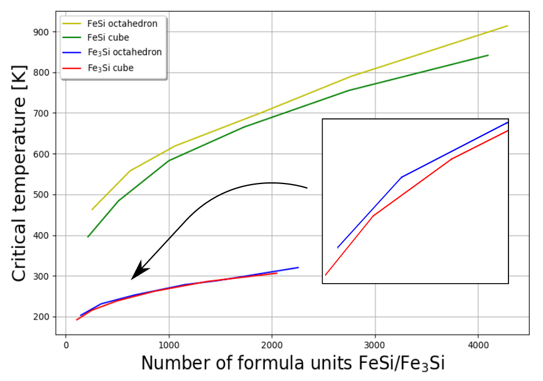
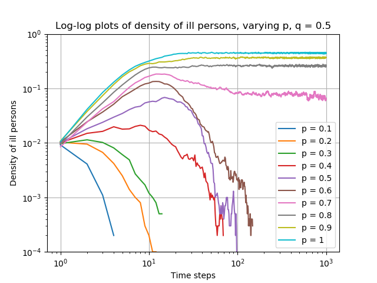

Ved å anvende numeriske metoder kan man analysere termodynamiske og statistiske fenomen i krystallinske-materialer.
Denne figuren viser resultater fra Monte Carlo- simuleringer, hvor vi ser at den atomistiske sammensetningen påvirker dissolusjonen
av atomer i omgivelsene. Figuren er fra en masteroppgave i fysikk.

Simuleringer kan brukes for å modellere spredning av virus i en befolkning. I denne figuren ser vi at enkelte virus
aldri blir utryddet i befolkningen, avhengig av sannsynligheten for smitte mellom individ, samt virusets sannsynlighet for å mutere.
Fra prosjekt i emnet TFY4235 Numerisk Fysikk, som kan tas på våren fjerde/femte klasse.